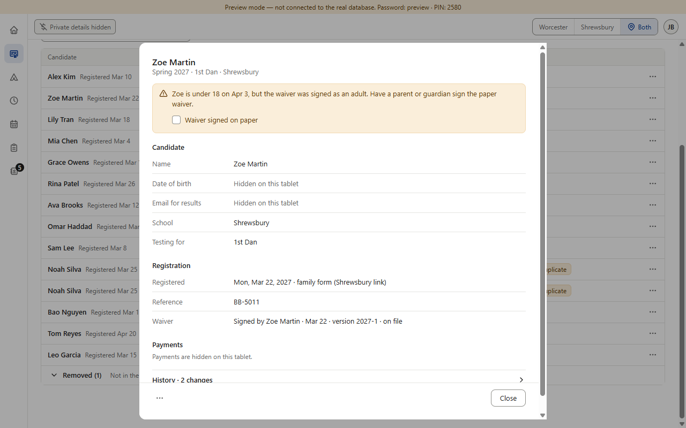
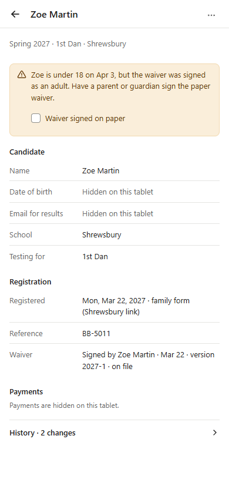
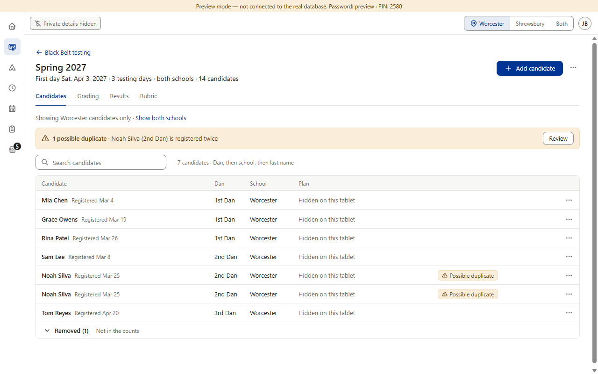

Two things still show on the mat tablet, and each lets someone work out a little about the date of birth: the amber “needs a parent’s signature” box (only for candidates under 18, here Zoe Martin) and the “Possible duplicate” tag with the amber box above the roster (a duplicate means same name and same date of birth). Neither shows a date or an age number. Which should the switch hide?



A: a parent beside the tablet can tell that this child is under 18 on the first testing day (the box says so; the parent already sees the child), and that two rows share a name and a birth date. Staff lose nothing: the box still tells them a parent must sign the paper waiver, and the duplicate box still lets them review and resolve pairs.
B: a reader no longer learns the child is under 18. Staff lose the warning and the “Waiver signed on paper” tick at the mat; to fix a missing parent signature they turn the switch off first. Duplicates behave as in A.
C: the least is revealed. Staff lose the same as B, and also the duplicate box, its Review button and the tags: at the mat two rows of the same candidate look like two people until the switch is off. Rows below the hidden parts would move up; the outlines only show what goes.